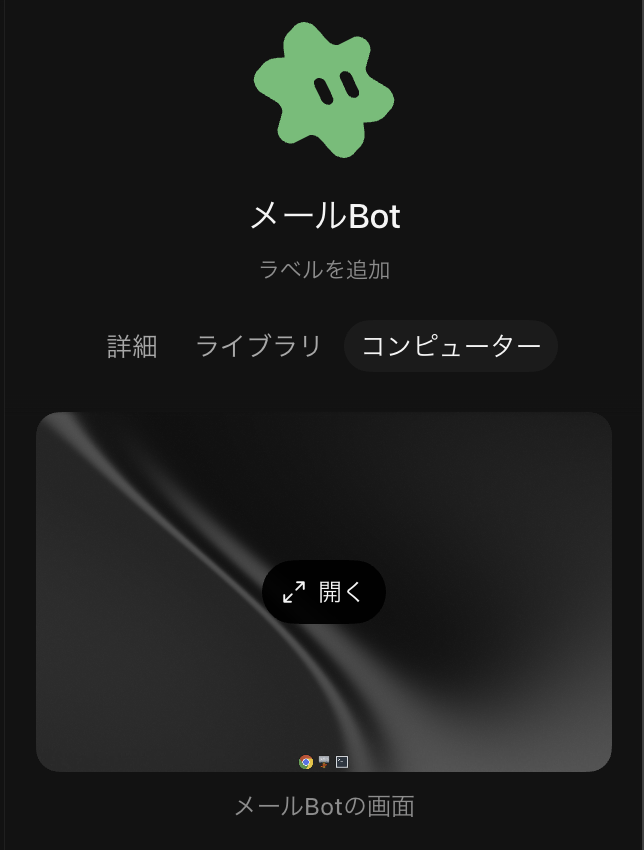
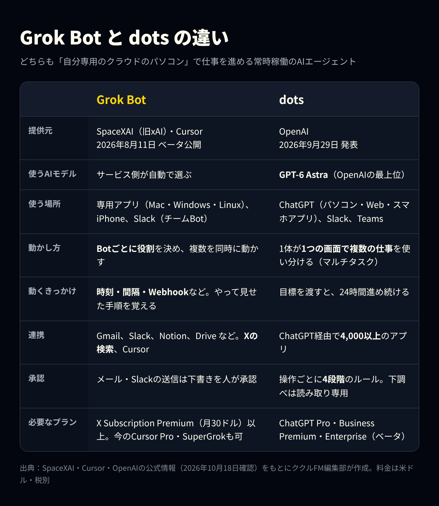
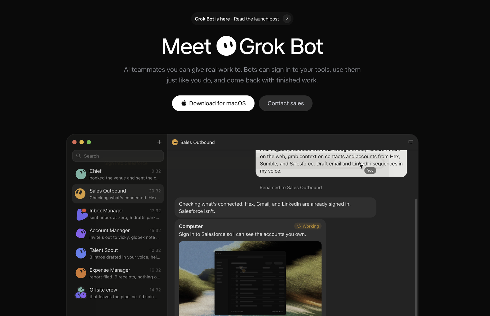
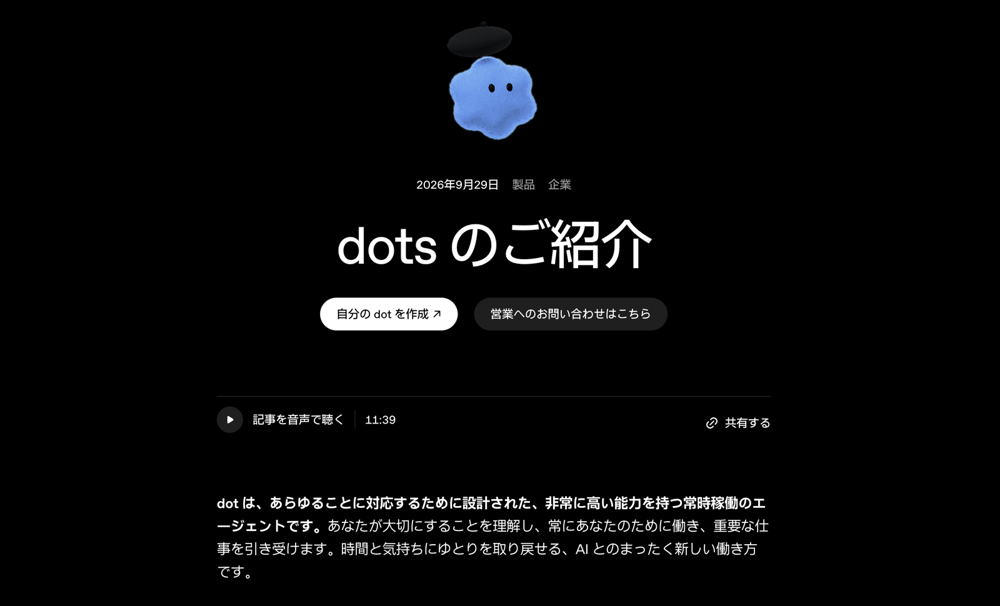
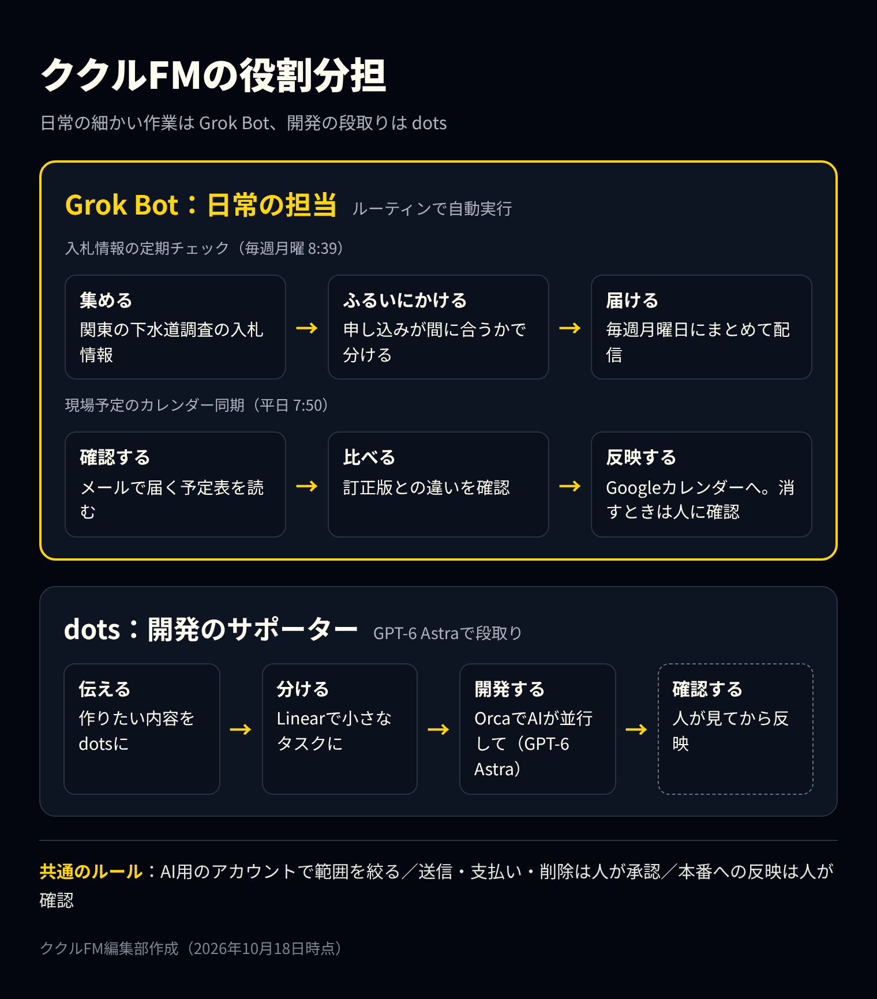
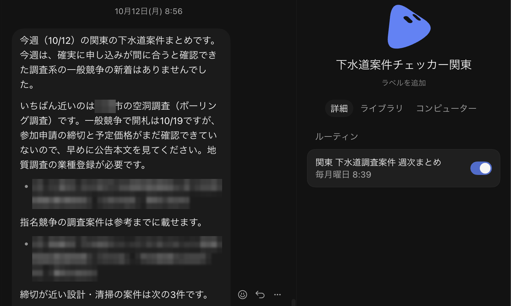
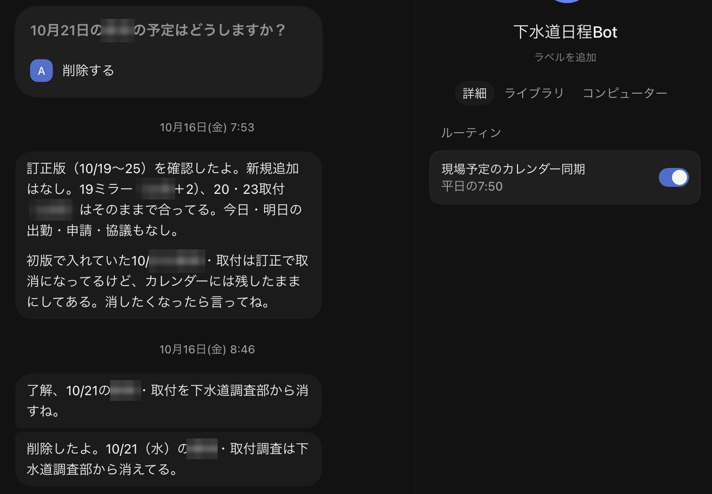
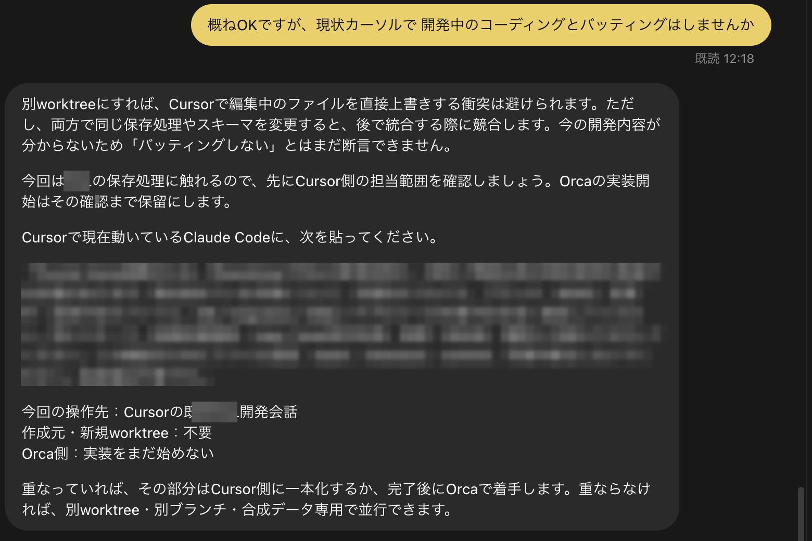
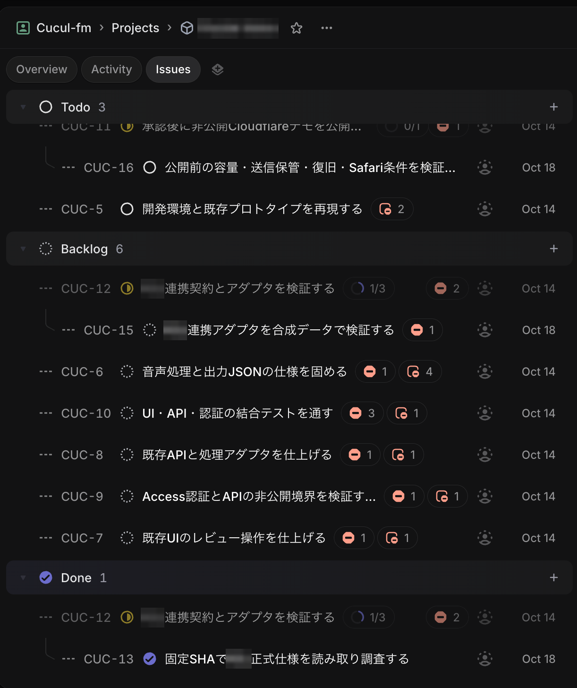
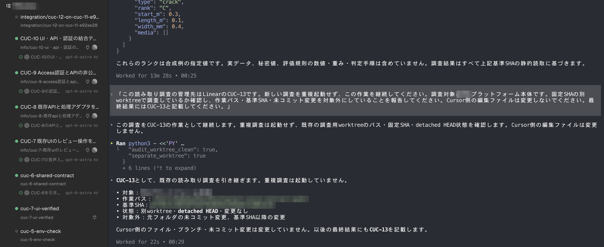

2026年の夏から秋にかけて、「話しかけると、自分専用のパソコンで仕事を最後まで進めるAI」が相次いで登場しました。代表的なのが、SpaceXAI（旧xAI）の「Grok Bot（グロック・ボット）」と、OpenAIの「dots（ドッツ）」です。
どちらも、チャットで頼むと、AIがクラウド上のパソコンとブラウザを使い、アプリにログインして作業を進めます。人が見ていない間も動き続ける点も同じです。一方で、使うAIモデル、得意なこと、料金、承認の仕組みには違いがあります。
ククルFMでは、2つを役割で分けて使っています。この記事では、2つの違いを表で整理し、当社の活用例を紹介します。情報は2026年10月18日時点です。どちらも発表から日が浅く、内容が週単位で変わっているため、使う前に公式の情報も確認してください。
※本記事はAI（Claude）の支援を受けて作成し、内容は編集部が各社の公式情報と照らし合わせて確認しています。
先に結論：日常の作業はGrok Bot、開発はdots
- Grok Bot：Botごとに役割を決め、決まった時刻やきっかけで動かす「ルーティン」が得意。情報の定期チェックや、メールで届く予定の反映のような、日々の細かい作業を任せられる
- dots：OpenAIの最上位モデル「GPT-6 Astra」で動き、1つの画面でいくつもの仕事を文脈ごとに使い分けてくれる（マルチタスク）。開発の段取りのように、話があちこちに広がる仕事に向く
- ククルFMは併用：日常の作業はGrok Bot、開発のサポートはdotsと、役割を分けて使っています
Grok Botとdotsとは：自分のパソコンを持つ「常時稼働のAIエージェント」
これまでのAIは、聞かれたことに答えるのが中心でした。Grok Botとdotsは、仕事を渡すと、AIが自分で手順を考えて最後まで進めます。
- Grok Bot：SpaceXAIとCursorが提供しています。2026年8月11日にベータ版（試験提供）として公開されました。パソコン用のアプリ（Mac・Windows・Linux）とiPhoneのアプリから使います
- dots：OpenAIが2026年9月29日に発表しました。ChatGPTのパソコン用アプリ・Web・スマホアプリから使い、SlackやTeamsからも話しかけられます
2つとも、AIがクラウド上に専用のパソコンとブラウザを持ちます。人のパソコンとは切り離された場所で作業するため、作業中も自分のパソコンは普段どおり使えます。


Grok Botの特徴

1. 決まった時刻やきっかけで動く「ルーティン」
作業の手順を一度見せると、Botがそれを覚えて「ルーティン」として保存します。ルーティンは、毎日・毎時・一定の間隔といった時刻のほか、Webhook（ほかのシステムからの合図）をきっかけに動かせます。結果を誰に届けるかも、ルーティンごとに決められます。
2. 複数のBotを並べて動かせる
最初から複数のBotを作り、同時に動かせます。全体を見る「まとめ役」のBotが、専門のBotに仕事を振り分ける使い方も公式に紹介されています。作ったBotは「チームBot」として社内に公開し、Slackから呼び出すこともできます。
3. Xの投稿や、いつものアプリを調べられる
10月上旬から、Xのアカウントを接続しなくても、Xの投稿やプロフィールを検索して読めるようになりました。連携できるアプリには、Gmail、Outlook、Slack、Notion、Google Drive、OneDrive、Canva、会計ソフトのQuickBooksなどがあります。10月11日には、Bot専用のメールアドレスや、X MoneyとStripe Linkでの支払いの機能も加わりました。
4. 使うAIモデルはサービス側が選ぶ
Grok Botでは、作業に使うAIモデルをサービス側が自動で選びます。モデルを選ぶ画面はなく、利用者が指定することはできません。
dotsの特徴

1. GPT-6 Astraがいつも使える
dotsは、OpenAIの最上位モデル「GPT-6 Astra」で動きます。ChatGPTの通常のチャットでAstraを使うには、Proなどの上位プランでも回数に上限があります。一方、dotsとの会話はChatGPTの利用上限に数えられません。考える力が要る仕事を、いつも最上位のモデルに任せられるのが、dotsの一番の利点です。
2. つなげられるアプリが4,000以上
ChatGPTのプラグインを通じて、4,000以上のアプリとつながります。ChatGPTの「メモリー」（覚えている情報）も引き継ぐため、普段からChatGPTを使っている人ほど、説明の手間が少なくて済みます。手元のパソコンを使わせることもできます（初期状態ではオフ）。
3. 承認のルールを4段階で決められる
AIにどこまで任せるかを、操作ごとに4段階で決められます。
| 設定 | 動き |
|---|---|
| 質問せずに実行 | AIの判断で進める |
| 事前に頼んだときだけ実行 | 指示の中で頼んだ操作だけ進める |
| 実行の前に確認 | 毎回、人の承認を待つ |
| 人に渡す | AIは実行せず、人に引き継ぐ |
AIが自分から行う下調べは「読み取り専用」で、メッセージを送ったり、アプリの内容を書き換えたりはしません。パスワードの変更などの重要な操作は、常に人が行う仕組みです。今使えるのは自分専用の「最初のdot」1体で、複数のdotを組み合わせる形は今後の予定とされています。
料金と使えるプラン（2026年10月18日時点）
| 項目 | Grok Bot | dots |
|---|---|---|
| 新しく申し込む場合 | The X SubscriptionのPremium（月30ドル）以上 | ChatGPT Pro（月100ドルから。どの料金帯が対象かは公式ヘルプに明記なし）、Business Premium |
| 含まれないプラン | Free、Plus（月8ドル） | 無料、Plus |
| 会社向け | チーム用のシート（Premium以上と同じ1人あたりの料金）、Enterprise | Enterprise（ベータ。管理者が有効にする） |
| 利用枠 | 週ごとにリセットされる専用の枠 | 最初の1体はプランに含まれる。dotsとの会話はChatGPTの利用上限に数えない |
| 日本での利用 | 利用できる。アプリの表示を日本語にできる | Proは日本も対象（欧州経済領域・スイス・英国は対象外） |
※料金は米ドル・税別。
SpaceXAIは10月12日に、Grok、Cursor、Xの有料プランをまとめた「The X Subscription」を始めました。Premium（月30ドル）には、Grok（SuperGrok）、Cursor Pro、X Premium+に相当する内容が含まれます。今のCursor ProやSuperGrokの契約は、そのまま続けられ、それらのプランでもGrok Botを使えます。
dotsは、ChatGPTのProかBusiness Premiumが必要です。ChatGPTの月3,000円のPlusでは使えません。両方を使うと、月に合わせて130ドル以上かかる計算です。併用するなら、それぞれに任せる仕事をはっきり分けることをおすすめします。
ククルFMの活用例

Grok Bot：日常の「痒いところに手が届く」担当
Grok Botには、毎日・毎週くり返す細かい作業を、用途ごとにBotを分けて任せています。
入札情報の定期チェック（毎週月曜 8:39）
「下水道案件チェッカー関東」というBotが、関東の自治体が出す下水道調査の入札情報を集め、毎週月曜の朝にまとめて届けます。「申し込みが間に合う一般競争」「参考の指名競争」「締切が近い設計・清掃」のように分けてくれるので、週の初めに読むだけで、その週に動くべき案件が分かります。参加の条件や締切が確認できないものは「公告本文を見てください」と、人が確かめるべき点も添えてくれます。

現場予定のカレンダー同期（平日 7:50）
「下水道日程Bot」は、取引先からメールで届く現場の予定表を平日の朝に確認し、社内のGoogleカレンダーに反映します。予定表の訂正版が届いたときは、前の版との違いを確かめて報告します。取り消しになった予定も、自分の判断では消さず「どうしますか？」と人に確認し、「削除する」を選んでから消しています。

どちらも、AIの作業は「読む・まとめる・予定を入れる」までです。メールの返信はさせず、予定の削除は人が選んでから実行しています。
dots：開発のサポーター
dotsは、自社のWebサービスの開発の相棒として、OpenAIの開発用アプリ「Codex」から使っています。
- 開発したい内容をdotsに伝え、タスク管理ツール「Linear」で、作業を小さなタスクに分ける
- 分けたタスクを、「Orca」（複数のAIコーディングエージェントを並べて動かせるデスクトップアプリ）で開発する。Orcaの中では、OpenAIのコーディング用エージェント「Codex」が、GPT-6 Astraで、Linearのタスクごとに別々の作業場所（worktree）で動く
- できあがった変更は、人が確認してから反映する
dotsが特に役立つのは、作業どうしがぶつからないかの確認です。下の例では、「Cursorで進めている開発とぶつからないか」という質問に、dotsが「別の作業場所なら上書きは避けられるが、同じ処理を両方で変えると、後でまとめるときにぶつかる」と答え、先にCursor側の作業範囲を確かめる手順と、そのための指示文を用意しています。



使ってみて感じた一番の違い：dotsはマルチタスクができる
当社が両方を使ってみて感じた一番の違いは、dotsがマルチタスクをこなせることです。
Grok Botは「入札情報はこのBot、現場の予定はこのBot」と、Botごとに役割を決めて使います。役割がはっきりした決まった作業には、この形が向いています。
一方のdotsは、1つの画面の中で、開発の段取り、Cursor側との作業のすり合わせ、指示文づくりといった別々の文脈を、自分で切り替えながら進めてくれます。「この話はどのAIに頼むか」を使い分ける手間を、ほとんど感じません。
併用で決めているルール
- AI用のアカウントを分け、見られるメールやカレンダーの範囲を絞る
- メールの送信、支払い、削除は、必ず人が承認してから実行する。Grok Botの支払いの機能は使わない
- 開発の変更は、人が確認してから本番に反映する
導入する前に確認したいこと
- データがどう扱われるか：今回確認した公式ページには、作業のデータがAIの学習に使われるか、どのくらい保存されるかの記載がありませんでした。会社で使う前に、利用規約や法人向けの契約条件を確認してください
- AIにログイン情報を渡すことになる：どちらも、AIがアプリにログインして作業します。AI用のアカウントを別に作り、権限を必要な範囲に絞りましょう
- AIは間違える：OpenAIも「dotsは間違えることがある。重要な仕事は必ず確認する」としています。送信、支払い、削除の前に人が確認する設定にしておきましょう
- 変更が速い：Grok Botは週に何度も更新されています。料金やプランも10月に大きく変わりました。使う前に公式の情報を確認してください
まとめ
- Grok Botとdotsは、どちらも自分専用のパソコンで仕事を最後まで進める「常時稼働のAIエージェント」
- Grok Botは、Botごとに役割を決めて動かすルーティン、Xの検索が強み。日々の細かい作業に向く
- dotsは、GPT-6 Astraがいつも使え、1つの画面で複数の仕事を使い分けられる（マルチタスク）のが強み。開発の段取りのような、話が広がる仕事に向く
- ククルFMは、日常の作業はGrok Bot、開発のサポートはdotsと分けて併用している
- 最初は「読む・まとめる」から任せ、送信や支払いは人が承認する
まずは、毎週の情報収集のような「読んでまとめるだけ」の仕事を1つ任せるところから試してみてください。
出典
本記事は、以下の公式情報と報道をもとに編集部が要約・翻訳しています（いずれも2026年10月18日確認）。図とアイキャッチは編集部が作成したものです。公式ページの画像は各社のページを撮影したもの、そのほかの画面は当社の利用画面で、個人名・取引先・現場名などは加工しています。
- SpaceXAI：Grok Botの発表（2026年8月11日）
- SpaceXAI：Grok Botの変更履歴
- SpaceXAI：The X Subscriptionの発表（2026年10月12日）
- Cursor：料金ページ
- Cursor：Grok Botのプランと利用枠
- PC Watch：Grok BotでXの投稿を検索・閲覧・監視できるように
- OpenAI：dotsの発表（2026年9月29日）
- OpenAIヘルプ：Getting started with your dot
- TechCrunch：dotsに関する報道（2026年9月29日）
- Orca（GitHub：stablyai/orca）
各社の名称・製品名は各社の商標または登録商標です。